Acervo
Galeria
Mesa posta, mesa dos noivos, forração e salão — do acervo da Eliane.
Mesa posta
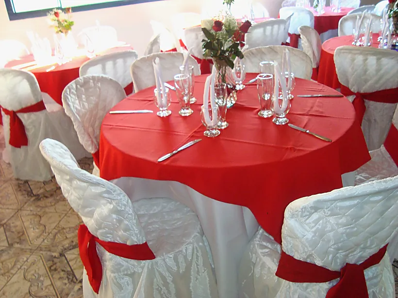
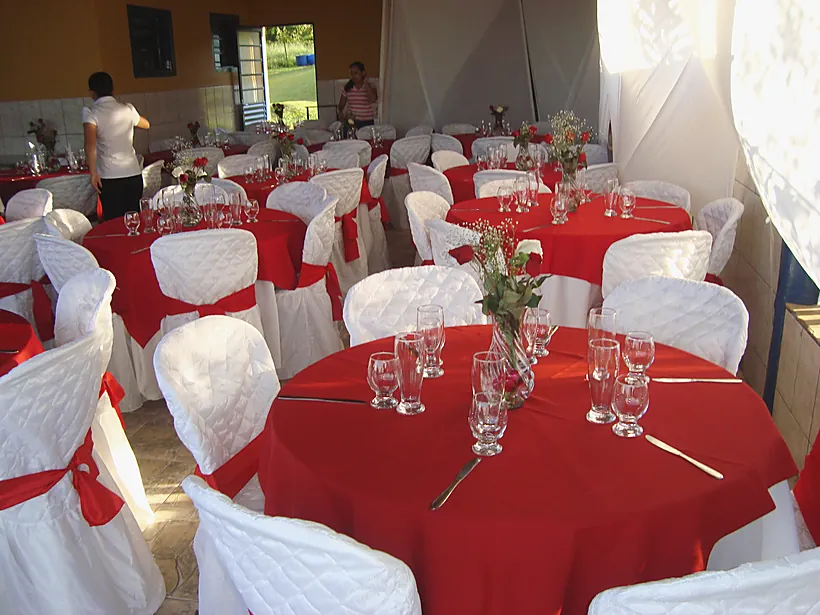
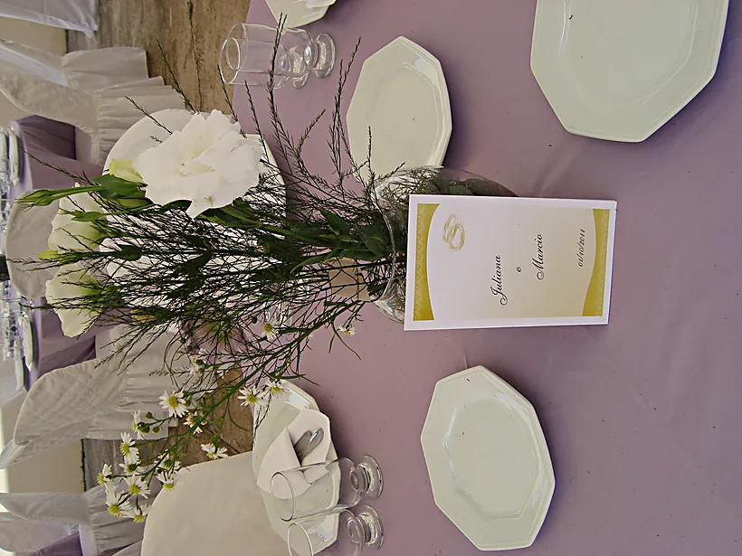
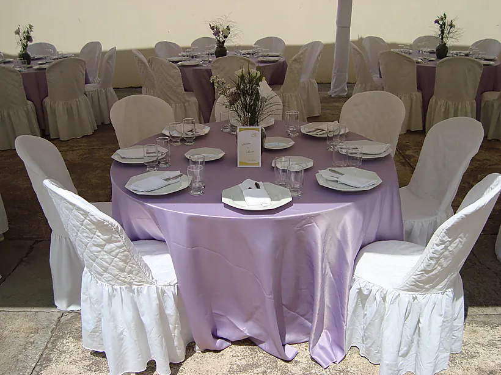
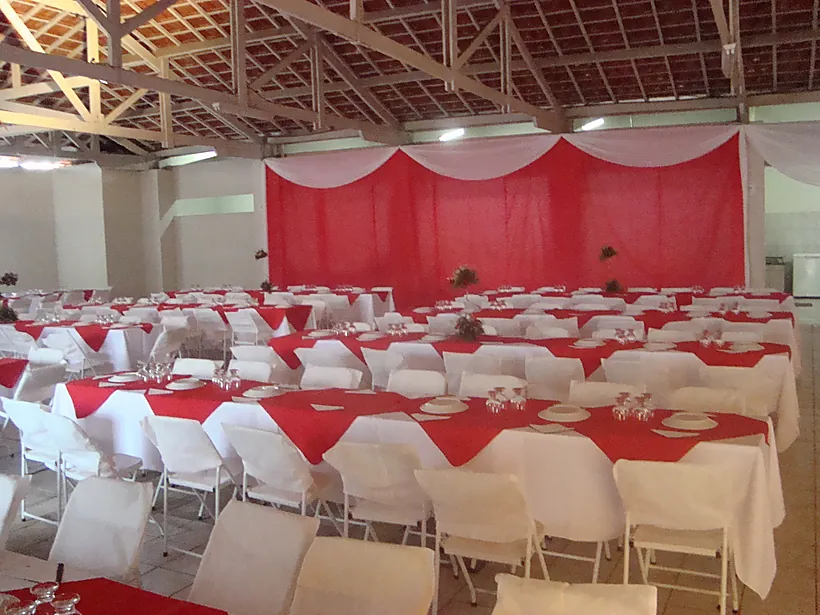
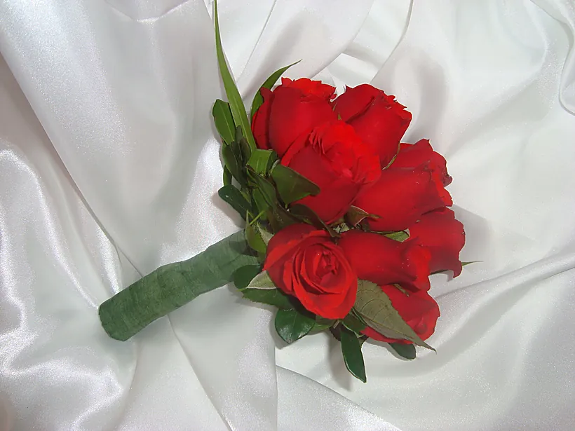
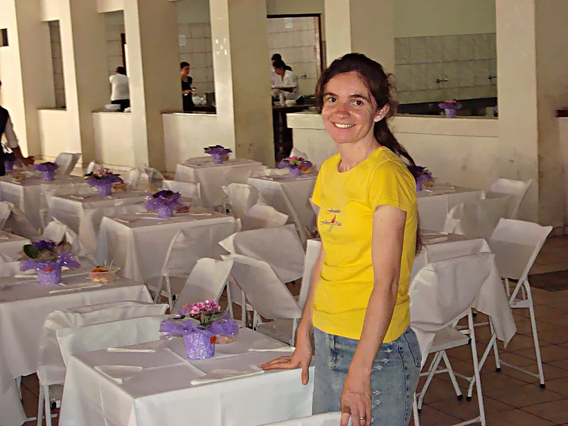
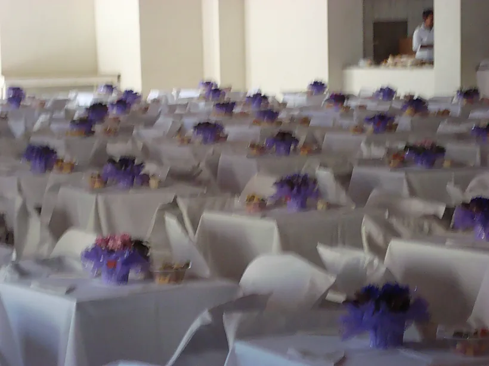
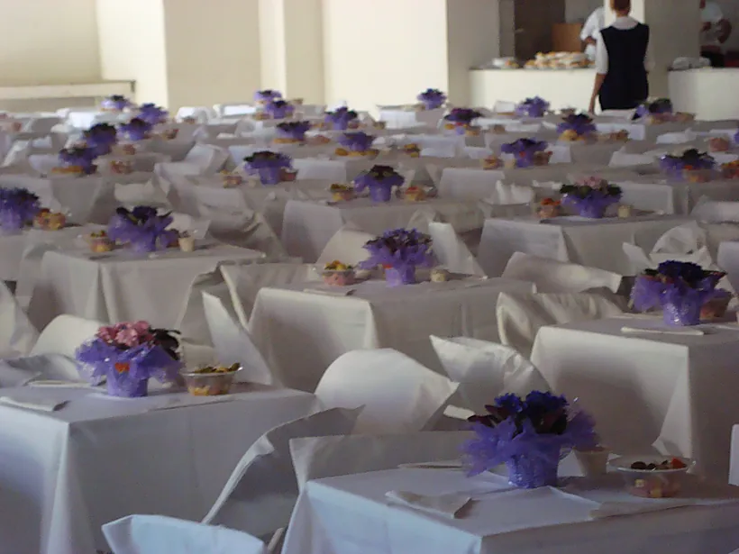
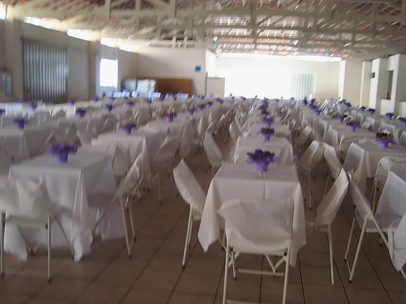
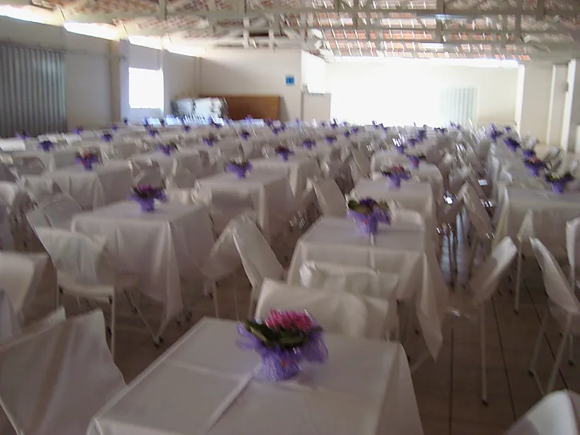
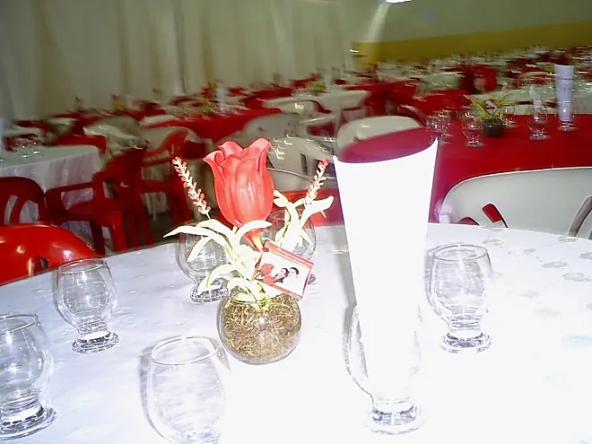
Mesa dos noivos e buffet

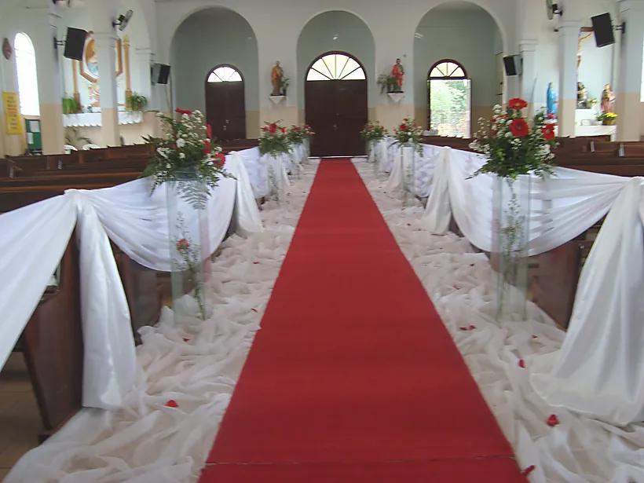
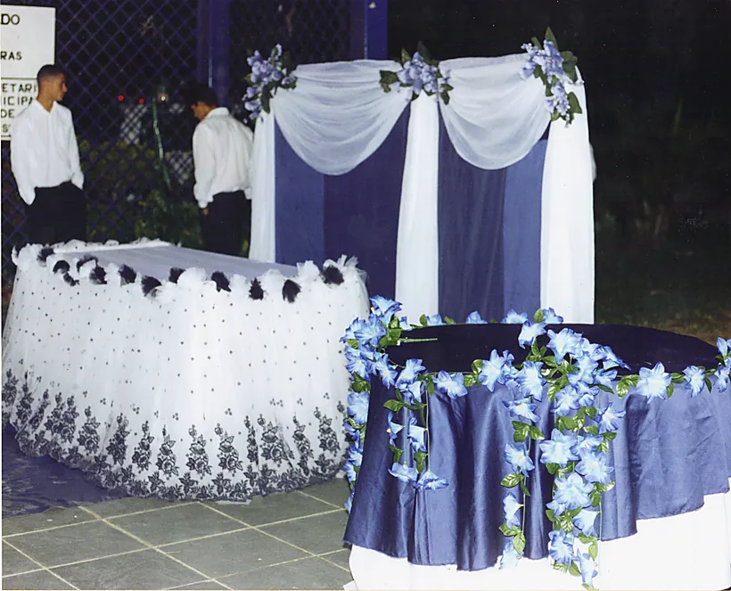
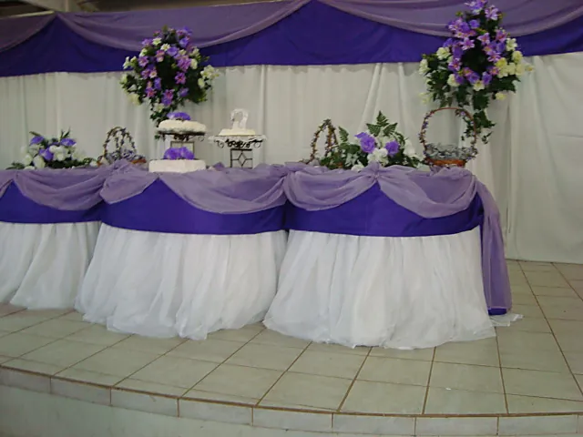
Forração, cortinado e ambiente


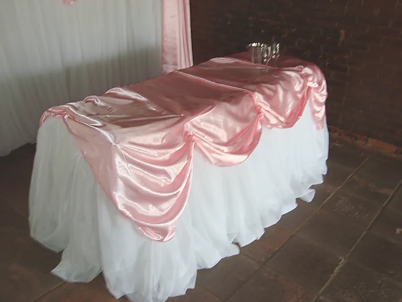
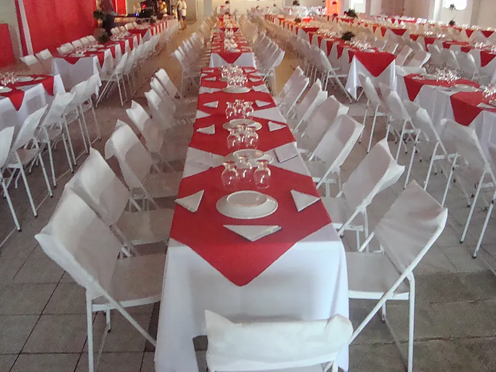
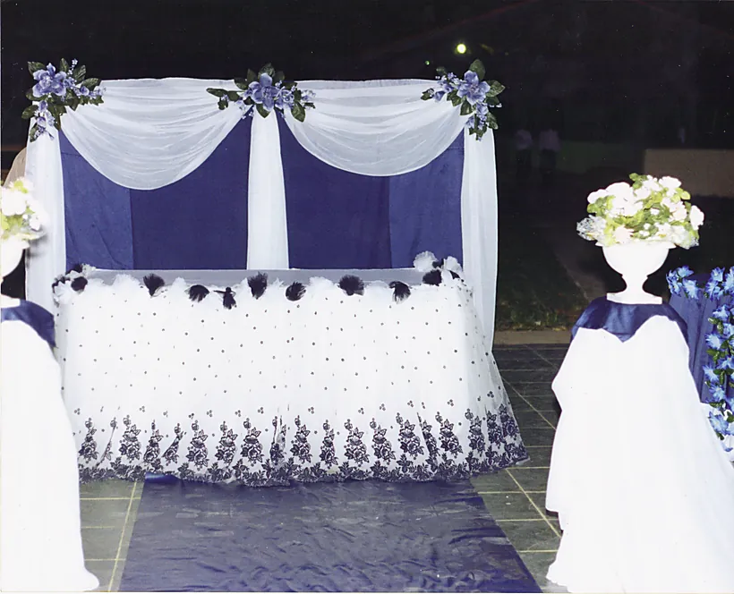
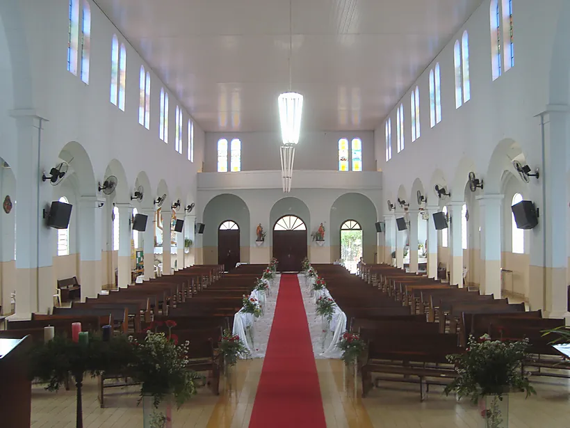
Sobre as fotos: este acervo é de 2008 a 2011, fotografado com uma câmera compacta da época.
A Eliane está fotografando o estoque atual com celular, uma foto por cor, à luz natural —
é isso que vai aparecer aqui em breve.